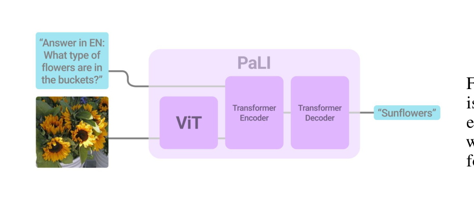
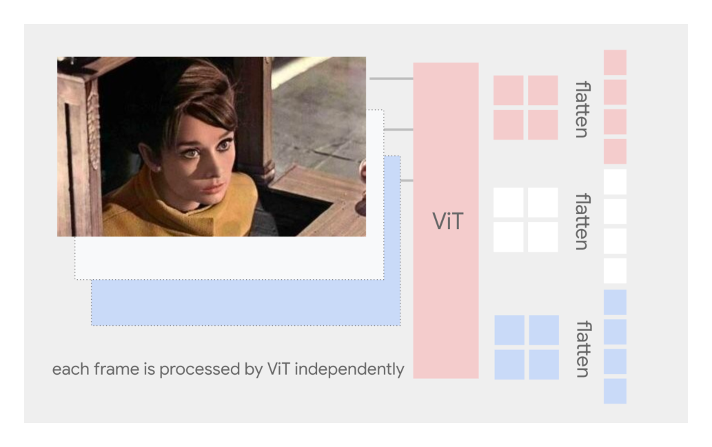
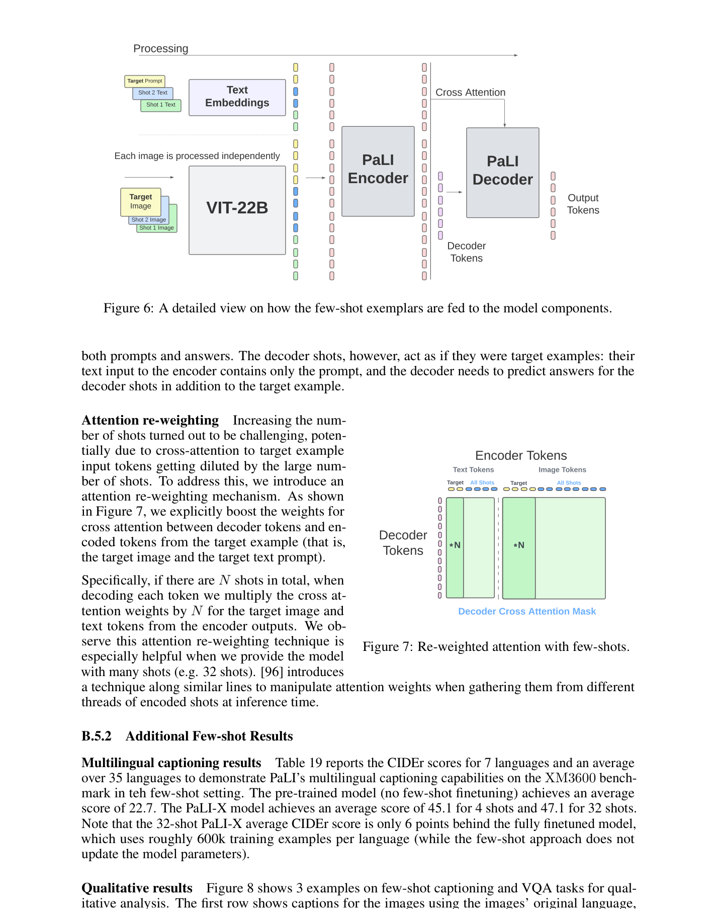
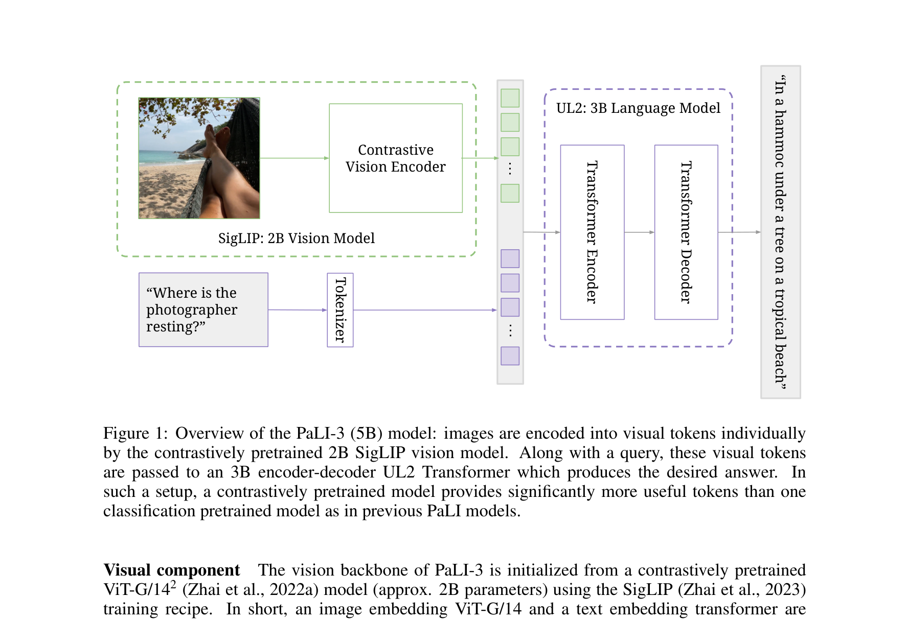

PaLI
PaLI¶
本笔记涵盖 PaLI → PaLI-X → PaLI-3 的演进历程，三篇论文均来自 Google Research / Google DeepMind 团队。
| 版本 | 论文 | 时间 | 核心变化 |
|---|---|---|---|
| PaLI | PaLI: Language and Vision Representation Learning with a Palette of Tasks | 2022.09 | 提出统一多任务视觉-语言预训练框架，基于 mT5 + ViT-e，支持 17+ 任务 |
| PaLI-X | PaLI-X: On Scaling up a Multilingual Vision and Language Model | 2023.05 | 引入 SigLIP 替代 CLIP loss，原生分辨率训练，视频理解，few-shot in-context learning |
| PaLI-3 | PaLI-3 Vision Language Models: Smaller, Faster, Stronger | 2023.10 | 采用 SigLIP ViT-G + Perceiver Resampler，仅 5B 参数即超越前代，高效推理 |
第一部分：PaLI - Language and Vision Representation Learning with a Palette of Tasks¶
📄 论文链接：arXiv:2209.06794 | PDF
目录¶
- 核心要点
- 1. 背景与动机
- 2. 方法
- 3. 网络结构详解
- 4. PaLI 总结
- 核心要点
- 1. 背景与动机
- 2. 方法
- 3. 网络结构详解
- 4. PaLI-X 总结
- 核心要点
- 1. 背景与动机
- 2. 方法
- 3. 网络结构详解
- 4. PaLI-3 总结
- 总结与对比
核心要点¶
- 统一多任务框架：PaLI 将 17+ 种视觉和视觉-语言任务统一到一个序列到序列（seq2seq）框架中，所有任务都以文本生成的形式表达，无需任务特定的 head 或损失函数。
- 双编码器架构：视觉端使用 ViT-e（ViT 的变体），语言端使用 mT5（多语言 T5），两者通过交叉注意力融合，而非简单的拼接或投影。
- WebLI 数据集：构建了大规模多语言图文数据集 WebLI，从网络爬取并经过严格过滤，支持 36 种语言。
- Scaling Law：验证了视觉-语言模型的 scaling law——模型越大、数据越多、性能越好，且不同任务间的 scaling 行为一致。
- 多语言能力：PaLI 是首批在大规模多语言设置下验证的视觉-语言模型之一，证明了跨语言迁移的有效性。
1. 背景与动机¶
1.1 现有方法的局限¶
在 PaLI 之前，视觉-语言预训练存在两大流派：
- 对比学习流派（CLIP、ALIGN、SigLIP）：通过图文对比损失学习对齐表示，擅长零样本分类和检索，但在生成式任务（如 captioning、VQA）上表现有限。
- 生成式流派（SimVLM、BLIP、OFA）：使用 seq2seq 或 decoder-only 架构进行预训练，能处理多种生成任务，但通常需要复杂的任务特定设计。
PaLI 的核心动机是：能否用一个统一的 seq2seq 框架同时处理所有视觉和视觉-语言任务，并且保持简洁的设计？
1.2 关键洞察¶
作者发现，几乎所有视觉-语言任务都可以被表述为 "给定图像，生成文本" 的形式：
- Image Captioning：直接生成描述
- VQA：生成答案文本
- Object Detection：生成边界框坐标的文本表示（如
<loc_12><loc_34>） - Image Classification：生成类别名称
- OCR：生成识别出的文字
- Retrieval：生成相关文本
这种统一表述使得可以用单一的 seq2seq 模型处理所有任务，避免了任务特定的架构修改。
2. 方法¶
2.1 整体架构¶

Figure 1: PaLI 的主架构。左侧为视觉编码器 ViT-e，右侧为语言编码器 mT5，中间通过交叉注意力层融合视觉和语言信息。所有任务统一为文本生成形式。PaLI 的架构由三个核心组件组成：
- 视觉编码器（ViT-e）：一个改进的 Vision Transformer，将输入图像编码为 patch embedding 序列。ViT-e 相比标准 ViT 的主要改进包括使用更大的模型尺寸和更高的训练分辨率。
- 语言编码器-解码器（mT5）：多语言 T5 模型，同时作为语言编码器和解码器。mT5 本身是在 101 种语言上预训练的，天然具备多语言能力。
- 交叉注意力融合：视觉 token 通过交叉注意力层注入到 mT5 的每一层中，使语言模型能够"看到"图像内容。
2.2 任务统一化¶
PaLI 将所有任务统一为以下格式：
[task prefix] [image tokens] [text input] → [text output]
其中 task prefix 是一个简短的任务描述字符串（如 "caption:", "vqa:", "detect:"），用于告知模型当前要执行的任务类型。
对于需要结构化输出的任务（如目标检测），PaLI 使用特殊的 location token 来表示坐标：
detect: <loc_12><loc_34><loc_56><loc_78> person
这种方式避免了引入额外的回归头或分类头，保持了架构的统一性。
2.3 预训练策略¶
PaLI 的预训练分为两个阶段：
- 独立预训练：视觉编码器和语言编码器分别在各自的数据集上进行预训练。ViT-e 在 JFT-300M 上预训练，mT5 在 mC4 上预训练。
- 联合微调：将预训练好的 ViT-e 和 mT5 组合在一起，在混合的多任务数据集上进行联合训练。混合数据集包含来自 WebLI、WIT、COCO、VQAv2 等多个数据集的样本，按一定比例混合。
关键设计决策： - 冻结 vs 全量微调：在联合训练初期冻结 mT5 的参数，只训练 ViT-e 和交叉注意力层；后期解冻 mT5 进行全量微调。 - 分辨率渐进：从低分辨率开始训练，逐步提高输入分辨率。 - 多任务混合比例：通过实验确定各任务的最优混合比例，避免某些任务主导训练。
2.4 WebLI 数据集¶
WebLI 是 PaLI 的核心数据资产，具有以下特点：
- 规模：约 100 亿图文对（后续版本有所调整）
- 多语言：覆盖 36 种语言的 alt-text
- 质量控制：经过多层过滤，包括去重、语言检测、NSFW 过滤、图文相关性评分等
- 许可证：仅使用具有适当许可的网络图像
3. 网络结构详解¶
3.1 ViT-e 视觉编码器¶
ViT-e 是 PaLI 视觉端的核心，其设计要点：
| 特性 | 说明 |
|---|---|
| 基础架构 | Vision Transformer (Dosovitskiy et al., 2020) |
| 模型尺寸 | 多个变体：ViT-e-B, ViT-e-L, ViT-e-H, ViT-e-g |
| 训练分辨率 | 最高支持 588×588 |
| Patch size | 14×14 |
| 预训练数据 | JFT-300M（内部数据集） |
| 输出 | Patch embedding 序列，通过线性投影映射到 mT5 的隐藏维度 |
3.2 mT5 语言模型¶
mT5 作为 PaLI 的语言骨干，提供了强大的多语言理解和生成能力：
- 预训练目标：Span corruption（T5 的标准目标）
- 语言覆盖：101 种语言
- 模型尺寸：与 ViT-e 对应，有多个变体
- 词汇表：SentencePiece，250K tokens
3.3 交叉注意力机制¶
视觉 token 通过交叉注意力注入 mT5 的方式是 PaLI 的关键创新之一：
- 在 mT5 的每一层都插入交叉注意力层
- 视觉 token 作为 key/value，语言 hidden states 作为 query
- 这使得语言模型能够在生成的每一步都访问完整的视觉信息
这种设计与 Flamingo 的 gated cross-attention 不同，PaLI 使用的是标准的交叉注意力，没有门控机制，也没有冻结语言模型的策略。
4. PaLI 总结¶
PaLI 的核心贡献在于证明了简洁统一的 seq2seq 框架足以处理广泛的视觉-语言任务，无需复杂的任务特定设计。其成功依赖于三个要素：
- 足够大的模型容量（ViT-e + mT5）
- 高质量的多任务混合数据（WebLI + 下游数据集）
- 合理的训练策略（分阶段、分辨率渐进、任务混合比例）
PaLI 的局限性包括：模型参数量较大（最大版本超过 10B），推理效率不高；对比学习能力较弱（纯 seq2seq 框架不擅长零样本检索）；视频理解能力缺失。这些问题在后续的 PaLI-X 和 PaLI-3 中得到了改进。
第二部分：PaLI-X - On Scaling up a Multilingual Vision and Language Model¶
📄 论文链接：arXiv:2305.18565 | PDF
核心要点¶
- SigLIP 替代 CLIP Loss：PaLI-X 引入了 Sigmoid Loss（SigLIP）作为图文对齐的辅助损失，解决了 CLIP softmax 归一化对 batch size 的依赖问题，使训练更高效稳定。
- 原生高分辨率训练：不再使用分辨率渐进策略，而是直接在高分辨率下进行训练，提升了细粒度视觉理解能力。
- 视频理解：通过简单的帧级 ViT 编码 + 时序聚合，将 PaLI-X 扩展到视频任务，无需专门的视频编码器。
- Few-shot In-context Learning：通过在 prompt 中加入少量示例，PaLI-X 展现了视觉-语言 in-context learning 能力，无需梯度更新即可适应新任务。
- Scaling 延续：进一步验证了视觉-语言模型的 scaling law，PaLI-X 在几乎所有基准上都超越了 PaLI。
1. 背景与动机¶
1.1 PaLI 的不足¶
尽管 PaLI 取得了显著成功，但仍存在几个问题：
- CLIP Loss 的局限：PaLI 在联合训练中使用了 CLIP 风格的对比损失作为辅助目标。然而 CLIP 的 softmax 归一化要求每个 GPU 上的 batch 内计算相似度矩阵，这限制了有效 batch size 和训练效率。
- 分辨率限制：PaLI 使用分辨率渐进策略，但最终分辨率仍然有限，影响了 OCR、文档理解等需要细粒度视觉信息的任务。
- 缺乏视频能力：PaLI 仅处理静态图像，无法理解视频中的时序信息。
- 无 In-context Learning：PaLI 不支持通过 prompt 中的示例来适应新任务，每次都需要微调。
1.2 SigLIP 的引入¶
PaLI-X 最重要的技术改进之一是采用了 SigLIP（Sigmoid Loss for Language-Image Pre-training）替代传统的 CLIP loss。
CLIP Loss 的问题： - Softmax 归一化需要在整个 batch 内计算，导致通信开销随 batch size 增长 - 对 batch composition 敏感，负样本的质量直接影响训练效果 - 难以在分布式训练中高效实现
SigLIP 的优势： - 使用逐对的 sigmoid 二分类损失，不需要全局归一化 - 每个图文对独立计算损失，天然适合分布式训练 - 对 batch size 不敏感，可以使用更大的有效 batch size - 训练更稳定，收敛更快
2. 方法¶
2.1 SigLIP 损失详解¶
SigLIP 将图文匹配建模为独立的二分类问题：
对于每个图文对 \((I_i, T_j)\)，计算相似度 \(s_{ij}\)，然后应用 sigmoid：
其中 \(y_{ij} = 1\) 当 \(i=j\)（匹配对），否则 \(y_{ij} = 0\)。
与 CLIP 的 softmax loss 相比，SigLIP 的关键区别在于： - 独立性：每对的损失独立计算，不需要在整个 batch 上做归一化 - 可扩展性：可以轻松扩展到任意大的 batch size - 稳定性：不受 batch 中负样本质量的影响
2.2 原生高分辨率训练¶
PaLI-X 放弃了 PaLI 的分辨率渐进策略，改为直接在目标分辨率下训练：
- 使用 ViT-e 的原生 patch size（14×14）
- 支持高达 588×588 甚至更高的输入分辨率
- 通过 position embedding 插值处理不同分辨率
高分辨率训练的好处： - 更好的细粒度视觉理解（OCR、文档、图表） - 更强的空间推理能力 - 对小物体的检测能力提升
2.3 视频理解¶

Figure 4: PaLI-X 的视频输入处理方式。每一帧独立通过 ViT 编码，patch embeddings 在时序维度上进行聚合后送入语言模型。PaLI-X 采用了一种简洁的视频处理策略：
- 帧级编码：视频的每一帧独立通过 ViT-e 编码，得到帧级 patch embeddings
- 时序聚合：将多帧的 patch embeddings 在时序维度上进行拼接或平均
- 语言模型处理：聚合后的视觉 token 与文本 token 一起送入 mT5
这种设计的优点是： - 复用图像编码器：无需训练专门的视频编码器 - 灵活帧数：可以根据任务需求调整采样帧数 - 简单有效：在视频 captioning、视频 QA 等任务上取得了有竞争力的结果
2.4 Few-shot In-context Learning¶
PaLI-X 展示了视觉-语言模型的 in-context learning 能力：
- 在 prompt 中加入 K 个
(image, text)示例对 - 模型根据这些示例推断任务模式，对新图像生成相应输出
- 无需任何梯度更新
为了实现这一能力，PaLI-X 在训练中加入了 few-shot 数据： - 随机采样 K 个同类任务的示例作为 context - 使用特殊的分隔符标记示例边界 - 通过 re-weighted attention 机制增强模型对 context 示例的关注

Figure 6 & 7: Few-shot exemplars 如何被送入模型各组件的详细视图（左），以及 Re-weighted attention 机制如何增强对 few-shot 示例的关注（右）。Re-weighted attention 的核心思想是：在交叉注意力中，对 few-shot 示例对应的视觉 token 赋予更高的注意力权重，使模型更好地利用这些示例信息。
3. 网络结构详解¶
3.1 与 PaLI 的架构差异¶
| 组件 | PaLI | PaLI-X |
|---|---|---|
| 视觉编码器 | ViT-e (JFT-300M) | ViT-e (更大规模数据) |
| 语言模型 | mT5 | mT5 (更大版本) |
| 图文对齐损失 | CLIP softmax loss | SigLIP sigmoid loss |
| 训练分辨率 | 渐进式 | 原生高分辨率 |
| 视频支持 | ❌ | ✅ 帧级编码 + 时序聚合 |
| Few-shot ICL | ❌ | ✅ Re-weighted attention |
| 最大模型规模 | ~10B | ~55B |
3.2 训练策略改进¶
PaLI-X 的训练策略相比 PaLI 有以下改进：
- SigLIP 预训练：视觉编码器先在大规模图文数据上用 SigLIP 进行对比预训练，获得更好的视觉表示
- 端到端联合训练：不再分阶段冻结/解冻，而是从头到尾进行端到端训练
- 更大的 batch size：得益于 SigLIP 的可扩展性，可以使用更大的全局 batch size
- 更多样的数据混合：增加了视频数据、OCR 数据、文档数据等
4. PaLI-X 总结¶
PaLI-X 在 PaLI 的基础上进行了系统性的升级，核心改进包括：
- SigLIP 解决了 CLIP loss 的可扩展性问题，使训练更高效
- 原生高分辨率 提升了细粒度视觉理解
- 视频理解 扩展了模型的应用范围
- Few-shot ICL 增加了模型的灵活性
PaLI-X 的主要局限是模型规模进一步增大（最大 55B），推理成本更高。这促使了 PaLI-3 的设计——追求更小、更快、更强的模型。
第三部分：PaLI-3 - Vision Language Models: Smaller, Faster, Stronger¶
📄 论文链接：arXiv:2310.09199 | PDF
核心要点¶
- SigLIP ViT-G 视觉编码器：PaLI-3 使用 SigLIP 预训练的 ViT-G 作为视觉骨干，相比 ViT-e 更高效，且在 SigLIP 预训练后获得了更强的视觉表示。
- Perceiver Resampler：引入 Perceiver Resampler 将可变长度的视觉 token 压缩为固定数量的 latent tokens，大幅降低了语言模型的计算负担。
- 仅 5B 参数：PaLI-3 的最大版本仅 5B 参数，但在大多数基准上超越或持平 PaLI-X（55B），实现了显著的参数效率提升。
- 高效推理：由于 Perceiver Resampler 的压缩效果和更小的模型规模，PaLI-3 的推理速度比 PaLI-X 快数倍。
- 持续 Scaling：即使在较小规模下，PaLI-3 仍然遵循 scaling law，增加数据和计算量持续提升性能。
1. 背景与动机¶
1.1 PaLI-X 的效率问题¶
PaLI-X 虽然在性能上取得了巨大成功，但其代价是极高的计算成本：
- 模型规模：最大版本达 55B 参数，部署困难
- 视觉 token 数量：高分辨率输入产生大量 patch tokens（如 588×588 分辨率下有 1764 个 tokens），每个 token 都要参与语言模型的交叉注意力计算
- 推理延迟：大量的视觉 token 导致自回归生成时每一步都很慢
1.2 核心问题¶
能否在保持甚至提升性能的同时，大幅减少模型参数和推理成本？
PaLI-3 的回答是肯定的，关键在于两个设计选择： 1. 使用更强的视觉编码器（SigLIP ViT-G），减少对语言模型的依赖 2. 使用 Perceiver Resampler 压缩视觉 token，降低语言模型的计算负担
2. 方法¶
2.1 SigLIP ViT-G 视觉编码器¶
PaLI-3 选择了 ViT-G（Giant）作为视觉编码器，并使用 SigLIP 进行预训练：
| 特性 | ViT-e (PaLI/PaLI-X) | ViT-G (PaLI-3) |
|---|---|---|
| 模型规模 | 多个变体，最大 ~4B | ~1B |
| 预训练方式 | JFT-300M supervised | SigLIP contrastive |
| 视觉表示质量 | 强 | 更强（得益于 SigLIP） |
| 计算效率 | 较低 | 更高 |
SigLIP 预训练赋予了 ViT-G 更强的视觉-语言对齐能力，这意味着视觉编码器本身就包含了更多的语义信息，减轻了对语言模型进行视觉理解的负担。
2.2 Perceiver Resampler¶

Figure 1: PaLI-3 (5B) 模型概览。图像通过 SigLIP ViT-G 编码为视觉 tokens，然后通过 Perceiver Resampler 压缩为固定数量的 latent tokens。这些 latent tokens 与文本 tokens 一起送入语言模型进行生成。Perceiver Resampler 是 PaLI-3 最关键的架构创新，其作用是：
将 ViT-G 输出的 N 个 patch tokens（N 随分辨率变化）压缩为固定的 K 个 latent tokens（通常 K=256 或 K=512）。
具体实现： 1. 初始化 K 个可学习的 latent queries 2. 使用 ViT-G 输出的 patch tokens 作为 key/value 3. 通过多层交叉注意力 + FFN 将信息从 patch tokens 聚合到 latent queries 4. 输出的 K 个 latent tokens 作为最终的视觉表示送入语言模型
为什么这很重要？
- 计算复杂度：语言模型的交叉注意力复杂度为 \(O(L \times N)\)，其中 L 是文本长度，N 是视觉 token 数量。Perceiver Resampler 将 N 从 ~1764 降低到 256，减少了约 7 倍的计算量。
- 固定长度：无论输入分辨率如何，输出的视觉 token 数量固定，简化了 batching 和推理。
- 信息保留：尽管进行了压缩，Perceiver Resampler 通过可学习的 queries 和多层次注意力保留了关键的视觉信息。
2.3 语言模型¶
PaLI-3 继续使用 mT5 作为语言模型，但使用了更高效的配置：
- 由于 Perceiver Resampler 已经压缩了视觉信息，语言模型可以使用更小的版本
- PaLI-3 的最大版本使用 mT5-XXL（约 4B 参数），加上 ViT-G（~1B），总计约 5B
- 相比之下，PaLI-X 的最大版本使用了约 55B 参数
2.4 训练策略¶
PaLI-3 的训练策略继承了 PaLI-X 的优点并进一步优化：
- SigLIP 预训练：ViT-G 先在大规模图文数据上用 SigLIP 预训练
- Perceiver Resampler 初始化：使用随机初始化，在联合训练中从头学习
- 端到端训练：所有组件（ViT-G、Perceiver Resampler、mT5）联合训练
- 多任务混合：与 PaLI-X 类似的多任务数据混合，但增加了更多高质量数据
- 分辨率：支持多种分辨率，通过 Perceiver Resampler 统一为固定长度的视觉表示
3. 网络结构详解¶
3.1 三代架构对比¶
| 组件 | PaLI | PaLI-X | PaLI-3 |
|---|---|---|---|
| 视觉编码器 | ViT-e | ViT-e (更大) | SigLIP ViT-G |
| 视觉 token 处理 | 直接传入 | 直接传入 | Perceiver Resampler 压缩 |
| 视觉 token 数量 | ~1764 (可变) | ~1764+ (可变) | 256/512 (固定) |
| 语言模型 | mT5 | mT5 (更大) | mT5-XXL |
| 总参数量 | ~10B | ~55B | ~5B |
| 图文对齐损失 | CLIP | SigLIP | SigLIP |
| 视频支持 | ❌ | ✅ | ✅ |
| Few-shot ICL | ❌ | ✅ | ✅ |
| 推理效率 | 低 | 很低 | 高 |
3.2 Perceiver Resampler 的设计细节¶
Perceiver Resampler 的具体配置：
- Latent queries 数量：256（默认）或 512
- 交叉注意力层数：6 层
- 注意力头数：16
- 隐藏维度：与 ViT-G 输出维度一致
- FFN 扩展比：4×
- 位置编码：使用可学习的位置编码
3.3 与其他方法的对比¶
| 方法 | 视觉编码器 | 视觉 token 处理 | 语言模型 | 参数量 | 特点 |
|---|---|---|---|---|---|
| PaLI | ViT-e | 直接传入 | mT5 | ~10B | 统一 seq2seq |
| PaLI-X | ViT-e | 直接传入 | mT5 | ~55B | SigLIP + 视频 + ICL |
| PaLI-3 | ViT-G | Perceiver Resampler | mT5-XXL | ~5B | 高效压缩 |
| Flamingo | NFNet | Perceiver Resampler | Chinchilla | ~80B | Gated XAttn + Frozen LM |
| BLIP-2 | ViT-G | Q-Former | OPT/FlanT5 | ~8B | 两阶段训练 |
| LLaVA | CLIP ViT-L | 线性投影 | Vicuna | ~13B | 简单投影 + 指令微调 |
PaLI-3 与 Flamingo 都使用了 Perceiver Resampler，但有关键区别： - Flamingo 使用 gated cross-attention 并冻结语言模型 - PaLI-3 使用标准 cross-attention 并全量微调所有组件 - PaLI-3 的 Perceiver Resampler 在联合训练中从头学习，而 Flamingo 的在单独阶段预训练
PaLI-3 与 BLIP-2 的区别： - BLIP-2 使用 Q-Former（类似 Perceiver 但有额外的图文对比损失） - BLIP-2 采用两阶段训练（先训练 Q-Former，再连接 LLM） - PaLI-3 采用端到端训练，所有组件联合优化
4. PaLI-3 总结¶
PaLI-3 的核心贡献是证明了通过更强的视觉编码器和高效的视觉 token 压缩，可以用远少的参数达到甚至超越更大模型的性能。
关键启示： 1. 视觉编码器的质量比数量更重要：SigLIP ViT-G 虽然只有 ~1B 参数，但其视觉表示质量超过了更大的 ViT-e 2. 视觉 token 压缩是关键：Perceiver Resampler 在不显著损失信息的前提下大幅降低了计算成本 3. 端到端训练优于分阶段训练：所有组件联合优化可以获得更好的整体性能 4. Scaling law 在小模型上依然有效：即使只有 5B 参数，增加数据和计算量仍然持续提升性能
总结与对比¶
三代方法对比¶
| 维度 | PaLI | PaLI-X | PaLI-3 |
|---|---|---|---|
| 发布时间 | 2022.09 | 2023.05 | 2023.10 |
| 视觉编码器 | ViT-e (JFT) | ViT-e (更大) | SigLIP ViT-G |
| 语言模型 | mT5 | mT5 (更大) | mT5-XXL |
| 视觉 token 处理 | 直接传入 | 直接传入 | Perceiver Resampler |
| 图文对齐损失 | CLIP softmax | SigLIP sigmoid | SigLIP sigmoid |
| 训练分辨率 | 渐进式 | 原生高分辨率 | 多分辨率统一 |
| 视频理解 | ❌ | ✅ | ✅ |
| Few-shot ICL | ❌ | ✅ | ✅ |
| 总参数量 | ~10B | ~55B | ~5B |
| 推理效率 | 低 | 很低 | 高 |
| 核心创新 | 统一 seq2seq 多任务框架 | SigLIP + 视频 + ICL | Perceiver Resampler + SigLIP ViT-G |
| 设计理念 | 大一统 | 更大更强 | 更小更快更强 |
演进脉络¶
PaLI (2022.09)
│ 统一 seq2seq 框架 + ViT-e + mT5 + WebLI
│ 问题：CLIP loss 不可扩展、分辨率有限、无视频、无 ICL
▼
PaLI-X (2023.05)
│ SigLIP + 原生高分辨率 + 视频 + Few-shot ICL
│ 问题：模型太大(55B)、推理太慢、视觉token过多
▼
PaLI-3 (2023.10)
SigLIP ViT-G + Perceiver Resampler + 端到端训练
仅 5B 参数，超越 PaLI-X，推理快数倍
与其他视觉-语言模型的对比¶
| 维度 | PaLI 系列 | CLIP/SigLIP | Flamingo | BLIP-2 | LLaVA |
|---|---|---|---|---|---|
| 架构类型 | Encoder-decoder seq2seq | Dual encoder | Decoder-only + XAttn | Encoder + Q-Former + LLM | CLIP + Linear + LLM |
| 任务范围 | 17+ 任务统一 | 零样本分类/检索 | 多任务 + ICL | 多任务 | 对话 + 指令跟随 |
| 训练方式 | 端到端联合训练 | 对比预训练 | 冻结 LM + 训练适配器 | 两阶段 | 两阶段 |
| 多语言 | ✅ (mT5, 101 语言) | ✅ (多语言版本) | ❌ (英语为主) | ❌ (英语为主) | ❌ (英语为主) |
| 生成能力 | ✅ 强 | ❌ 弱 | ✅ 强 | ✅ 强 | ✅ 强 |
| 检索能力 | ⚠️ 中等 | ✅ 强 | ⚠️ 中等 | ✅ 强 | ❌ 弱 |
| 参数效率 | PaLI-3 最优 | 高 | 低 | 中 | 中 |
设计哲学差异¶
- PaLI 系列 vs CLIP/SigLIP：
- CLIP/SigLIP 专注于表示学习，通过对比损失学习图文对齐，擅长零样本迁移
- PaLI 系列专注于任务统一，通过 seq2seq 框架直接生成任务输出，擅长多任务性能
-
PaLI-3 融合了两者：用 SigLIP 预训练视觉编码器获得好的表示，再用 seq2seq 框架做多任务
-
PaLI 系列 vs Flamingo：
- Flamingo 强调冻结大语言模型，只训练轻量级适配器，保护语言能力
- PaLI 系列强调端到端训练，所有组件联合优化，追求最优多任务性能
-
两者都使用了 Perceiver Resampler，但用法不同
-
PaLI 系列 vs BLIP-2/LLaVA：
- BLIP-2/LLaVA 采用两阶段训练，先训练视觉-语言连接器，再连接 LLM
- PaLI 系列采用端到端训练，避免了两阶段的次优问题
- BLIP-2/LLaVA 更注重开源生态和易用性，PaLI 系列更注重性能和多语言
关键技术演进总结¶
| 技术点 | PaLI → PaLI-X | PaLI-X → PaLI-3 |
|---|---|---|
| 图文对齐 | CLIP softmax → SigLIP sigmoid | 保持 SigLIP |
| 视觉编码器 | ViT-e → ViT-e (更大) | ViT-e → SigLIP ViT-G |
| 视觉 token | 直接传入 → 直接传入 | 直接传入 → Perceiver Resampler 压缩 |
| 分辨率 | 渐进式 → 原生高分辨率 | 保持高分辨率，通过压缩统一 |
| 模态 | 图像 → 图像+视频 | 保持图像+视频 |
| 适应性 | 仅微调 → Few-shot ICL | 保持 Few-shot ICL |
| 效率 | 更低 → 更低 | 大幅提升（5B vs 55B） |